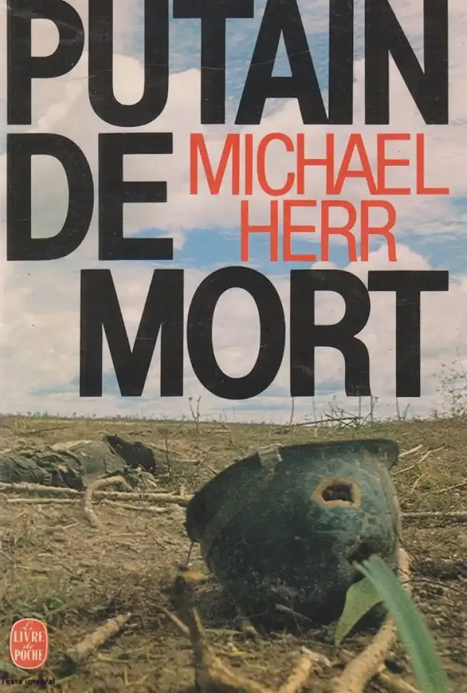

Putain de mort
"Putain de Mort" de Michael Herr : Un Regard Intime sur la Guerre du Vietnam
Dans son ouvrage emblématique "Putain de Mort", Michael Herr ne se contente pas d'être un simple observateur de la guerre du Vietnam. Il devient un témoin actif, plongeant au cœur de l'horreur et de l'absurdité de ce conflit. Son point de vue transcende le journalisme traditionnel pour devenir une expérience personnelle et profondément empathique.
Témoignage Brut de l'Enfer Vietnamien
Herr ne cherche pas à embellir la réalité. Ses mots sont des éclats de vérité qui déchirent le voile de l'illusion. Il nous expose l'effroi de la guerre sans fard ni artifice. Chaque page résonne comme un cri de détresse, un cri qui ne peut être ignoré.
"Putain de Mort" : Un Récit Intime
Ce livre n'est pas une chronique impersonnelle des faits de guerre. C'est une plongée dans les âmes des soldats, une tentative de comprendre leur lutte, leur douleur et leur humanité persistante au milieu du chaos. Herr donne une voix à ceux dont les paroles sont souvent étouffées par le tumulte des combats.
Les Dialogues Poignants des Soldats
À travers les conversations des soldats, Herr tisse une toile complexe d'émotions et de réflexions. Il capture les peurs silencieuses, les espoirs fragiles et les moments de camaraderie qui surgissent même dans les pires moments de l'horreur. Chaque mot résonne comme un éclat d'humanité au milieu du carnage.

Traumatisme Indélébile : Les Séquelles de la Guerre
Michael Herr ne se contente pas de décrire les horreurs du champ de bataille. Il explore également les cicatrices invisibles qui persistent longtemps après la fin des combats. Les traumatismes psychologiques, les cauchemars qui hantent les nuits, tout est abordé avec une sensibilité déchirante.
L'Héritage de "Putain de Mort"
Plus qu'un livre, "Putain de Mort" est un mémorial littéraire pour ceux qui ont vécu et péri dans les jungles du Vietnam. Il continue d'éclairer les générations futures sur la véritable nature de la guerre. C'est un rappel poignant de l'importance de comprendre les conséquences humaines de ces conflits dévastateurs. Ainsi, à travers les mots de Michael Herr, la guerre du Vietnam cesse d'être un simple événement historique. Elle devient une expérience partagée, une douleur commune, et une leçon indélébile pour l'humanité. "Putain de Mort" est bien plus qu'un livre sur la guerre, c'est un cri de l'âme contre l'horreur de la violence et un appel à la compréhension et à la paix.